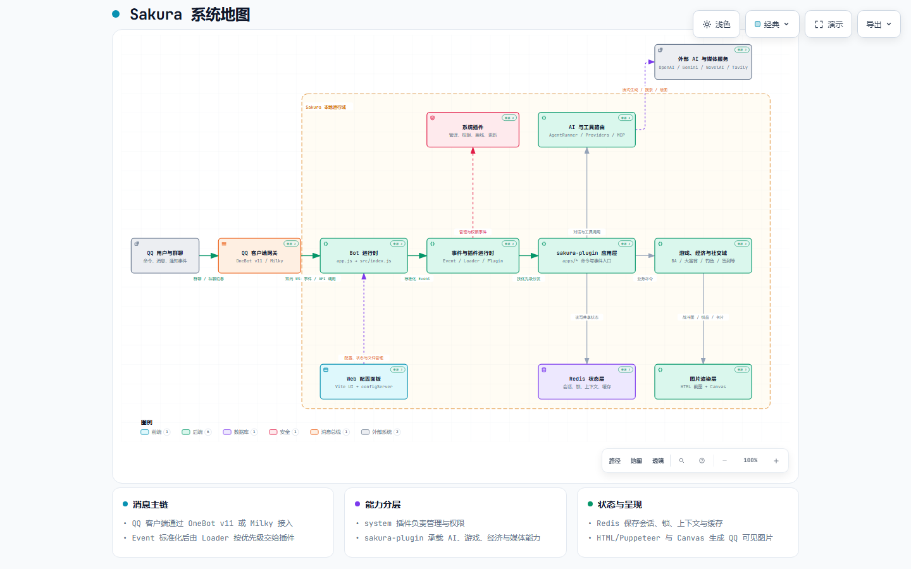

多连接适配
支持 OneBot 正向/反向 WebSocket，也能接入 Milky HTTP/WebSocket，按实际部署环境选择连接方式。
Node.js / OneBot / Milky / Integrated Repository
一个仓库交付框架核心、内置系统插件、Sakura 综合功能插件和 Web 配置面板。连接、事件分发、状态、配置与群功能保持在同一条版本线上。

主仓库直接包含 src/、plugins/system/、plugins/sakura-plugin/ 与 Web 前端。克隆并安装根目录 workspace，即可获得同版本的运行时、内置管理能力和综合群功能。
交互式系统地图展示父子进程、OneBot/Milky 接入、事件分发、系统插件、Sakura Plugin、Redis、Web 配置面板及可选外部服务之间的真实边界。

打开交互式地图 ↗支持 OneBot 正向/反向 WebSocket，也能接入 Milky HTTP/WebSocket，按实际部署环境选择连接方式。
统一封装消息事件，按优先级分发 Command、OnEvent 与 Cron，并支持插件热加载。
框架配置和插件配置通过 schema 校验、补全并热更新，减少手工维护 YAML 的偏差。
会话、上下文、定时任务与插件状态统一依赖 Redis，支撑长期运行的群机器人。
启动后提供可视化入口，可编辑框架、账号、插件配置、菜单和动态选项。
父进程负责工作进程生命周期，生产环境可由 PM2 守护；Chrome/Chromium 提供图片渲染能力。
plugins/sakura-plugin 是当前主仓库的一部分，不是外部子仓库、Git 子模块，也不需要安装后另行下载。根目录的 pnpm workspace 会一起安装框架、插件与 Web 前端依赖，并由同一份锁文件固定版本。
app.js 连接或按配置拉起 Redis，再 fork 工作进程并处理异常重启。
工作进程通过 OneBot 或 Milky 接收消息，并统一包装成框架 Event。
命令、事件监听与定时任务按优先级进入系统插件或 Sakura Plugin。
处理器读取配置和 Redis 状态，按需调用外部服务，再把文本或图片发回 QQ。
准备 Node.js 20+、pnpm 9+、Redis 6+、Chrome/Chromium，以及一个兼容 OneBot 或 Milky 的 QQ 客户端。
查看完整安装与配置说明 →git clone https://github.com/suzuka-suzuka/Sakura.git
cd Sakura
pnpm install
pnpm start